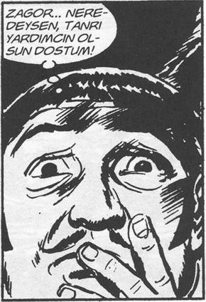

Evin zilini çaldı. Kapının açılmasıyla birlikte mis gibi bir yemek kokusuyla birlikte badem gözlü kızının yüzü göründü.
Eğildi, sarıldılar.
– Annen nerede?
– Yemek yapıyor, Şef !
Bu onun lakabıydı. Önce, kahvede söylemeye başlamış şef olmak istediğini bilen arkadaşları. Galiba ilk Deniz takmıştı bu lakabı, o da ona Dino dediği için.
Belki de Musti, her neyse.
Eşi mutfaktaydı.
– Hanım ben bir saatliğine kahvedeyim!
Kızına sıkıca sarıldı:
– Ödevlerini tamamla, yemekten sonra sohbet eder, şakalaşırız.
– Baba sen söylemesen ödevleri yapmayacaktım.
Gülüştüler, gerçekten çalışkan bir çocuktu. Hıdır Azgören’i hayata en sıkı bağlayan varlık; minik kızı.
Kahveden içeri girdi, okey oynayan ekipten toplu bir ses yükseldi.
– Ve Aleykümselam.
– Selamünaleyküm.
Ali Mahmut, Musti, Dino, Ahmedürey taş oynarlarken, Şinasi onların eline konuşuyordu.
– Kırmızı üçlüyü atmayacaktın. Seriye gitsen şimdiye bitmiştin gibi laflar ediyordu.
Mustafa: Abi bu kadar biliyorsan gel bir kere de sen oyna.
Şinasi: Ben oynamam oğlum. Boşa vakit.
Ahmedürey: Abi ne boşa vakti. Sen her akşam aynı vakti bizi seyrederek geçiriyorsun zaten.
Şinasi: Ben oynamam oğlum. Dino’yu taşlasana, adam tek taşa dönüyor bitecek şimdi.
Toplu bir “Allah Allah” sesi.
– Oğlum konuşmasana elimize!
– Tamam tamam.
Hıdır köşeye doğru süzüldü. Ali oradaydı. Ali Kuyumcu. Hem hemşerisiydi hem de çok iyi arkadaşı.
– Bana da getirdin mi?
– Tabii, hiç unutur muyum?
Zuladan bir Teksas-Tommiks çıkardı Ali ve Hıdır’a uzattı.
– Vaay Zagor ha!
– Zagor Te-nay, dedi Ali; Baltalı İlah!
– Nasıl da bilirsin sevdiğimi. Sen ne okuyorsun?
– Killing tabii.
İkisi kitaplara gömüldüler.
Kahveci Şahin İpek çayları dağıtmaya başladı. Bir yandan da,
– İçmeyin oğlum bu çayları, bitki çayı için, daha yararlı, diye söyleniyordu.
Deniz, Şahin’e: Ağabey ya bu kahvenin adı ne biçim bir şey, böyle kahvehane adı olur mu? Ne demek ağabey?
– Biraz kitap okursan öğrenirsin ne demek olduğunu cahil.
Ahmedürey: Abi bir çay ısmarlayayım da söyle Allah aşkına şu kahvenin adı ne anlama geliyor. Dordor mu ne? Yıllardır çözemedik abi.
– Önce adını doğru öğren cahil!
Çıkışta Şino yanaştı: Şef, yarın bir bakalım senin arabaya ha?
– Tabii aslanım şeref verirsin.
Kişisel gelişim için kişisel, mesleki hatta spiritüel anlamda olsun bir başarısızlık yaşamanın gerekliliğini kavradım.[2]
